We collected bibliographic and scientometric data from collection of articles that are the references for the information of the FGSC strains. We will summarize these variables.
Load the data stored in a Google Sheet format using the gsheet library.
library(tidyverse)
library(janitor)
Sys.setlocale("LC_ALL", "pt_BR.UTF-8") # set the UTF to read the characters in portuguese## [1] ""articles <- gsheet::gsheet2tbl('https://docs.google.com/spreadsheets/d/1rAC_U5upuDPHCSLi9kieb4R5tztHVJGW84aQOf6z7Lk/edit?usp=sharing')
library(viridis)
library(cowplot)
theme_set(theme_minimal_hgrid())library(tidyverse) # load several libraries for data wrangling and plotting
library(ggthemes)##
## Attaching package: 'ggthemes'## The following object is masked from 'package:cowplot':
##
## theme_mapp1 <- articles %>%
select(year, source) %>%
group_by(year, source) %>%
tally() %>%
ggplot(aes(year, n, fill = source))+
geom_col()+
scale_fill_few()+
theme_minimal_hgrid(font_size = 9)+
labs(x = "Year of publication",
y = "Number of articles",
fill = "Strain info source")+
theme(legend.position = "top")A total of (n = 123) peer-reviewed articles were published from 2000 to 2021.
Not all articles contributed data at the strain level and these were summarized in relation to article metrics and a summary data for the strains together with all associated information that could be obtained such as origin, year, species, genotype, etc. These articles were assigned as summary for the strain source category.
For those articles contributing data, they were classified as author when obtained directly from the authors and article when the source were the tables and supplemental materials from where the strain information was obtained.
Let’s have a look at the number of articles on each category.
articles %>%
nrow()## [1] 123articles %>%
select(source) %>%
group_by(source) %>%
tally(sort = T) ## # A tibble: 3 x 2
## source n
## <chr> <int>
## 1 Article 56
## 2 Author 42
## 3 Not available 25#100/19Let’s plot the number of articles per year conditional to the contribution of strain data.
library(cowplot)
articles %>%
ggplot(aes(year, fill = source))+
theme(axis.text.x = element_text(angle = 45, hjust = 1)) +
geom_bar()+
scale_fill_viridis_d()+
scale_y_continuous(breaks=seq(0, 11, 1), expand=c(0.01, 0))+
scale_x_continuous(breaks=seq(2000, 2019))+
labs(y = "Number of articles", x = "Published year", title = "Articles per year", fill = "Strain info")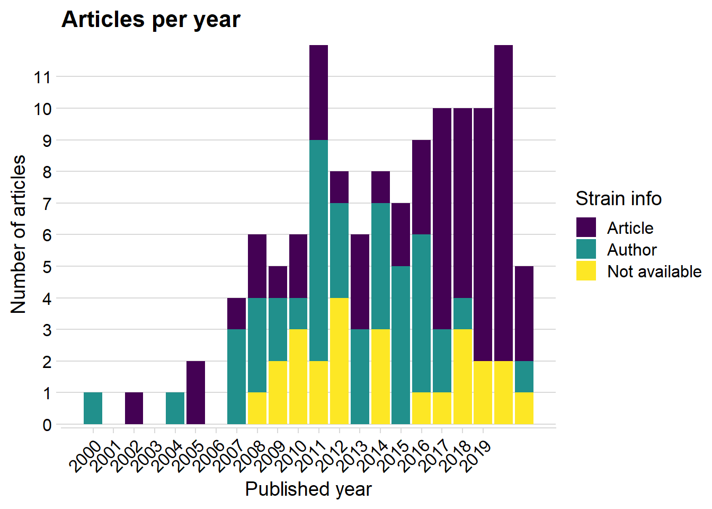
journal <- articles %>%
select(journal_name) %>%
group_by(journal_name) %>%
tally(sort = T)
p2 <- journal %>%
filter(n > 2) %>%
ggplot(aes(reorder(journal_name, n), n))+
geom_col(fill = "steelblue", color = "white")+
coord_flip()+
theme_minimal_vgrid(font_size = 8)+
labs(x = "",
y = "Number of articles")
library(patchwork)##
## Attaching package: 'patchwork'## The following object is masked from 'package:cowplot':
##
## align_plots(p1 | p2)+ plot_annotation(tag_levels = "A")+
plot_layout(widths = c(1, 0.7))+
ggsave("figs/fig1.png", width = 8, height =3.8)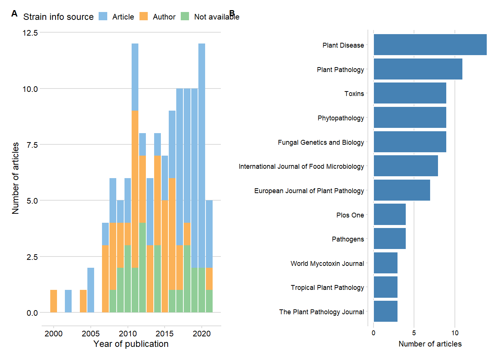
The articles were published in 40 peer-reviewed journals. The journal with the greatest number of articles was Plant Disease with 14 articles, followed by Plant Pathology (11 articles) and Fungal Genetics and Biology (9 articles). We had only a few journals where the articles did not contribute data at the strain level. Most of the articles contributed data at the strain level obtained from the authors or extracted from the articles.
library(cowplot)
articles %>%
ggplot(aes(reorder(journal_name, journal_name, function(x) length(x)), fill = source))+
geom_bar()+
theme_minimal_vgrid()+
scale_fill_viridis_d()+
scale_y_continuous(breaks=seq(0,20), expand=c(0.01, 0))+
coord_flip()+
labs(y = "Number of articles", x = "", title = "Articles per journal", fill = "Strain info")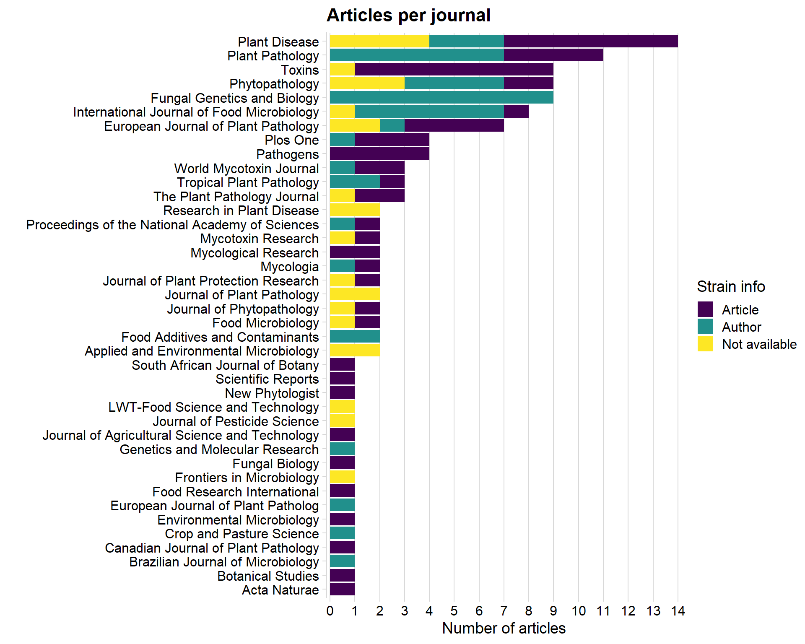
Here we will analyze the authorship network to detect connections among the authors and research communities. For such, we need to build an edge list, or all pairs of occurrences of two authors in a same publication. Let’s see below the first 10 pairs or authors. The whole list has almost one thousand pairs.
library(purrr)
library(purrrlyr)
authors_net <- articles %>% select (7:20)
author_list <- flatten(by_row(authors_net, ..f = function(x) flatten_chr(x), .labels = FALSE))
author_list <- lapply(author_list, function(x) x[!is.na(x)])
# create the edge list
author_edge_list <- t(do.call(cbind, lapply(author_list[sapply(author_list, length) >= 2], combn, 2)))
author_edge_list[1:10, ]## [,1] [,2]
## [1,] "Astolfi P" "Reynoso MM"
## [2,] "Astolfi P" "Ramirez ML"
## [3,] "Astolfi P" "Chulze SN"
## [4,] "Astolfi P" "Alves TCA"
## [5,] "Astolfi P" "Tessmann DJ"
## [6,] "Astolfi P" "Del Ponte EM"
## [7,] "Reynoso MM" "Ramirez ML"
## [8,] "Reynoso MM" "Chulze SN"
## [9,] "Reynoso MM" "Alves TCA"
## [10,] "Reynoso MM" "Tessmann DJ"Within an authorship network, co-authors (present in a same article) are linked together. Authors from this articles can be connected to authors from other articles whenever they appear together. Therefore, two articles are linked by a common author. Each author is then considered a node in the network and the connections between them are the edges or links. There are several statistics to calculate in a network analysis.
For now, let’s visualize the authorship network and also the community structure which was defined via a function that tries to find densely connected subgraphs, also called communities. We will use a random walk algorithm for determining the communities. The idea is that short random walks tend to stay in the same community. In the network below, there are 15 communities or subgraphs which are represented by the colors.
# igraph
library(igraph)
net=graph.edgelist(as.matrix(author_edge_list), directed=FALSE)
degree <- enframe(degree(net))
degree %>%
arrange(-value)## # A tibble: 498 x 2
## name value
## <chr> <dbl>
## 1 Ward TJ 190
## 2 O’Donnell K 85
## 3 Corby Kistler H 77
## 4 Waalwijk C 73
## 5 Xu J 68
## 6 van der Lee T 63
## 7 Del Ponte EM 61
## 8 Zhang H 53
## 9 Lee T 53
## 10 Chen W 47
## # ... with 488 more rows#summary(degree$degree.net.)
between <- data.frame(round(betweenness(net), 1))
page <- data.frame(page_rank(net)$vector)
close <-data.frame(round(closeness(net), 10))
eigen <- data.frame(round(evcent(net)$vector, 5))library(network)
library(intergraph)
# Clusters
wc <- cluster_walktrap(net)
eb <- cluster_edge_betweenness(net)
lec <- cluster_leading_eigen(net)
cl <- cluster_label_prop(net)
# Modularity
mod <- modularity(wc)
ms <- membership(wc)
net_stat <- asNetwork(net)
png("figs/network1.png", res = 600, width = 5000 , height = 5000, units="px")
set.seed(11)
par(mar=c(0,0,0,0))
plot.network(net_stat, vertex.cex= 0.05 + 0.25*log(graph.strength(net)), label =ifelse(degree(net)>37,V(net)$name,NA), label.bg = "white", label.col = "black", edge.col = "lightgray", edge.lty = 0.5, label.cex = 0.6, displaylabels = TRUE, vertex.col = membership(wc), jitter = T, edge.len = 0.2, boxed.labels=T, label.border=1, pad=5)
dev.off()## quartz_off_screen
## 2library(purrr)
library(purrrlyr)
country_net <- articles %>% select (31:36)
country_list <- flatten(by_row(country_net, ..f = function(x) flatten_chr(x), .labels = FALSE))
country_list <- lapply(country_list, function(x) x[!is.na(x)])
# create the edge list
country_edge_list <- t(do.call(cbind, lapply(country_list[sapply(country_list, length) >= 2], combn, 2)))
country_edge_list[1:10, ]## [,1] [,2]
## [1,] "Brazil" "Argentina"
## [2,] "Brazil" "United States"
## [3,] "Brazil" "United States"
## [4,] "Brazil" "United States"
## [5,] "Argentina" "Brazil"
## [6,] "Argentina" "Uruguay"
## [7,] "Brazil" "Uruguay"
## [8,] "Brazil" "United States"
## [9,] "Brazil" "United States"
## [10,] "Brazil" "United States"# igraph
library(igraph)
net2 <- graph.edgelist(as.matrix(country_edge_list), directed=FALSE)
degree <- data.frame(degree(net2))
#summary(degree$degree.net.)
between <- data.frame(round(betweenness(net2), 1))
page <- data.frame(page_rank(net2)$vector)
close <-data.frame(round(closeness(net2), 10))
eigen <- data.frame(round(evcent(net2)$vector, 5))library(network)
library(intergraph)
# Clusters
wc2 <- cluster_walktrap(net2)
eb2 <- cluster_edge_betweenness(net2)
lec2 <- cluster_leading_eigen(net2)
cl2 <- cluster_label_prop(net2)
# Modularity
mod <- modularity(wc2)
ms <- membership(wc2)
net_stat2 <- asNetwork(net2)
png("figs/network2.png", res = 600, width = 4500 , height = 4000, units="px")
set.seed(1003)
par(mar=c(0,0,0,0))
plot.network(net_stat2, vertex.cex= 1 + 0.25*log(graph.strength(net2)), label =ifelse(degree(net2)>0, V(net2)$name,NA), label.bg = "NA", label.col = "black", edge.col = "gray", edge.lty = 1, label.cex = 0.7, edge.lwd = 2, displaylabels = TRUE, vertex.col = membership(wc2), jitter = T, edge.len = 0.2, boxed.labels = T, label.border="NA", pad=1)
dev.off()## quartz_off_screen
## 2library(broom)
# Transitivity
trans <- transitivity(net, type = "global")
# Degree
deg <- degree(net)
deg <- tidy(deg)
deg2 <- deg %>% group_by(names) %>%
arrange(desc(x)) %>% head(20)
# Betweenness
bet <- betweenness(net, normalized = TRUE, directed = FALSE)
bet <- tidy(bet)
bet2 <- bet %>% group_by(names) %>%
arrange(desc(x)) %>% head(20)
# Eigenvector centrality
eigen <- eigen_centrality(net)
eigen1 <- tidy(eigen$vector)
eigen2 <- eigen1 %>% group_by(names) %>%
arrange(desc(x)) %>% head(20)
# Page rank centrality
rank <- page.rank(net)
rank1 <- tidy(rank$vector)
rank2 <- rank1 %>% group_by(names) %>%
arrange(desc(x)) %>% head(20)
# Closeness centrality
close <- closeness(net)
close1 <- tidy(close)
close2 <- close1 %>% group_by(names) %>%
arrange(desc(x)) %>% head(20)
# Clusters
wc <- cluster_walktrap(net)
# Modularity
mod <- modularity(wc)
ms <- membership(wc)
# clustering edge betweenness
eb <- cluster_edge_betweenness(net)
lec <- cluster_leading_eigen(net)Transitivity, also know as clustering coefficient, is the mean probability that two author with a common author are themselves co-authors. In our study the transitivity was 0.4736311, which means that, on average, the chance that two scholars that share a common collaborator wrote a paper together is almost one-half.
Individually, authors can be highly connected or influential. The degree of a node is a basic structural property that quantify the number of adjacent nodes or edges. Let’s see the 25 authors with most degree values.
plot(deg2$x, eigen2$x)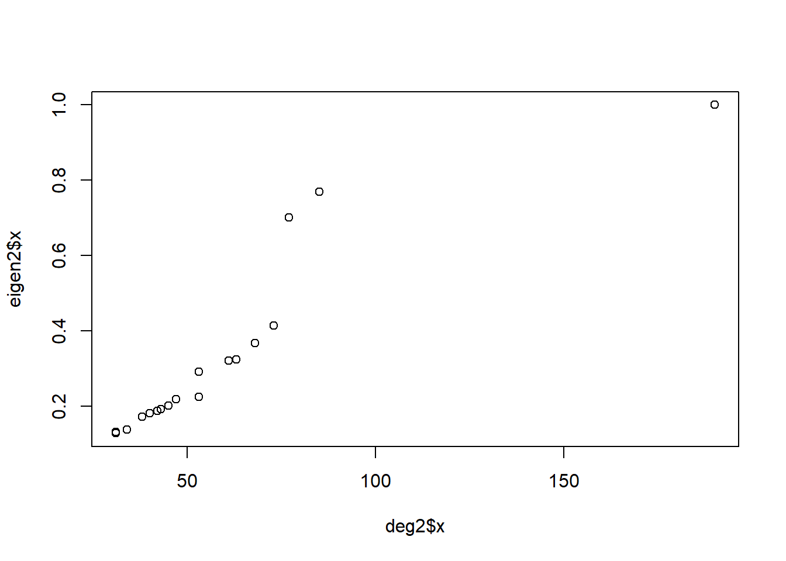
head(bet2, 10)## # A tibble: 10 x 2
## # Groups: names [10]
## names x
## <chr> <dbl>
## 1 Ward TJ 0.310
## 2 Waalwijk C 0.183
## 3 Lee T 0.0773
## 4 Chen W 0.0759
## 5 Chulze SN 0.0641
## 6 Del Ponte EM 0.0451
## 7 Proctor RH 0.0354
## 8 Zhang H 0.0258
## 9 Lee Y-W 0.0255
## 10 Wu X 0.0255head(rank2)## # A tibble: 6 x 2
## # Groups: names [6]
## names x
## <chr> <dbl>
## 1 Ward TJ 0.0276
## 2 O’Donnell K 0.0119
## 3 Corby Kistler H 0.0105
## 4 Del Ponte EM 0.00882
## 5 Waalwijk C 0.00847
## 6 Xu J 0.00739head(eigen2)## # A tibble: 6 x 2
## # Groups: names [6]
## names x
## <chr> <dbl>
## 1 Ward TJ 1
## 2 O’Donnell K 0.769
## 3 Corby Kistler H 0.701
## 4 Aoki T 0.415
## 5 Gale LR 0.368
## 6 Geiser DM 0.324head(close2)## # A tibble: 6 x 2
## # Groups: names [6]
## names x
## <chr> <dbl>
## 1 Ward TJ 0.0000143
## 2 Waalwijk C 0.0000143
## 3 Chulze SN 0.0000143
## 4 Lee T 0.0000143
## 5 Clear RM 0.0000143
## 6 Kelly A 0.0000143articles %>%
ggplot(aes(n_isolates))+
geom_histogram()## `stat_bin()` using `bins = 30`. Pick better value with `binwidth`.## Warning: Removed 1 rows containing non-finite values (stat_bin).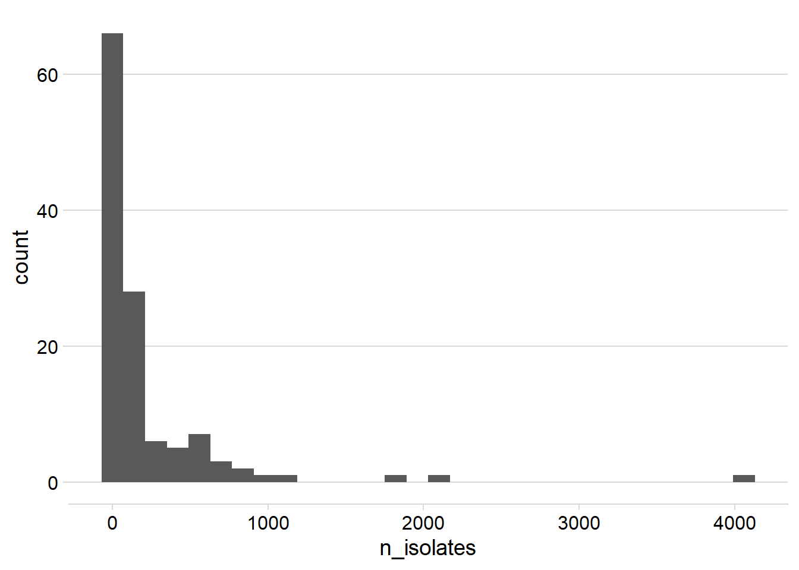
sum(articles$n_isolates, na.rm = TRUE)## [1] 26644summary(articles$n_isolates)## Min. 1st Qu. Median Mean 3rd Qu. Max. NA's
## 1.0 20.0 62.0 218.4 155.2 4062.0 1articles %>%
dplyr::group_by(source) %>%
summarize(n_strains = sum(n_isolates, na.rm = TRUE)) ## n_strains
## 1 26644# number of strains per species
articles %>%
select(38:53) %>%
gather(species, value) %>%
filter(value != "NA") %>%
group_by(species) %>%
summarize(n_strains = sum(value),
strains = round((sum(value)/sum(articles$n_isolates, na.rm = true))*100,2)) %>%
arrange(-strains) ## n_strains strains
## 1 24384 91.52# species by number of studies
articles %>%
select(38:53) %>%
gather(species, value) %>%
filter(value != "NA") %>%
tabyl(species) %>%
arrange(-n)## species n percent
## Fgra 106 0.41406250
## Fasi 47 0.18359375
## Fmer 36 0.14062500
## Fboo 20 0.07812500
## Fcor 18 0.07031250
## Faus 9 0.03515625
## Fbra 4 0.01562500
## Faca 3 0.01171875
## Fvor 3 0.01171875
## FbooXFgra 2 0.00781250
## Fnep 2 0.00781250
## Fuss 2 0.00781250
## Faet 1 0.00390625
## Fger 1 0.00390625
## Flou 1 0.00390625
## Fmes 1 0.00390625# species by number of studies
articles %>%
select(80:90) %>%
gather(fgra, value) %>%
filter(value != "NA") %>%
tabyl(fgra) %>%
arrange(-n)## fgra n percent
## Fgra_15ADON 84 0.512195122
## Fgra_3ADON 40 0.243902439
## Fgra_NIV 22 0.134146341
## Fgra_DON 8 0.048780488
## Fgra_NX2 4 0.024390244
## Fgra_DON/NIV 2 0.012195122
## Fgra_15ADON/NX2 1 0.006097561
## Fgra_DON/ZEA 1 0.006097561
## Fgra_s3ADON 1 0.006097561
## Fgra_ZEA 1 0.006097561# species by number of studies
articles %>%
select(80:90) %>%
gather(fgra, value) %>%
filter(value != "NA") %>%
tabyl(fgra) %>%
arrange(-n)## fgra n percent
## Fgra_15ADON 84 0.512195122
## Fgra_3ADON 40 0.243902439
## Fgra_NIV 22 0.134146341
## Fgra_DON 8 0.048780488
## Fgra_NX2 4 0.024390244
## Fgra_DON/NIV 2 0.012195122
## Fgra_15ADON/NX2 1 0.006097561
## Fgra_DON/ZEA 1 0.006097561
## Fgra_s3ADON 1 0.006097561
## Fgra_ZEA 1 0.006097561# species by number of studies
articles %>%
select(92:97) %>%
gather(fmer, value) %>%
filter(value != "NA") %>%
tabyl(fmer) %>%
arrange(-n)## fmer n percent
## Fmer_NIV 29 0.80555556
## Fmer_15ADON 2 0.05555556
## Fmer_DON 2 0.05555556
## Fmer_15ADON/NIV 1 0.02777778
## Fmer_3ADON 1 0.02777778
## Fmer_DON/NIV 1 0.02777778articles %>%
select(57:65) %>%
gather(fasi, value) %>%
filter(value != "NA") %>%
tabyl(fasi) %>%
arrange(-n)## fasi n percent
## Fasi_NIV 35 0.44303797
## Fasi_3ADON 21 0.26582278
## Fasi_15ADON 11 0.13924051
## Fasi_DON 5 0.06329114
## Fasi_N15ADON 3 0.03797468
## Fasi_4,15-diANIV 1 0.01265823
## Fasi_DON/NIV 1 0.01265823
## Fasi_NX-2 1 0.01265823
## Fasi_NX-2/3-ADON 1 0.01265823articles %>%
select(115:128) %>%
gather(host, value) %>%
filter(value != "NA") %>%
tabyl(value) %>%
arrange(-n) %>%
tibble()## # A tibble: 45 x 3
## value n percent
## <chr> <dbl> <dbl>
## 1 Wheat 71 0.348
## 2 Maize 33 0.162
## 3 Barley 29 0.142
## 4 Rice 12 0.0588
## 5 Soybean 8 0.0392
## 6 Oat 6 0.0294
## 7 Durum wheat 3 0.0147
## 8 Soil 3 0.0147
## 9 Rye 2 0.00980
## 10 Sugar beet 2 0.00980
## # ... with 35 more rowsfgsc <- readxl::read_excel("data/fgsc-dat-clean.xlsx")
fgsc## # A tibble: 16,273 x 12
## `Collection cod~ Host Country Year Latitude Longitude FGSC TRI_genotype
## <chr> <chr> <chr> <dbl> <dbl> <dbl> <chr> <chr>
## 1 07Tr001 Wheat Brazil 2007 -28.0 -53.4 F. g~ 15-ADON
## 2 07Tr002 Wheat Brazil 2007 -28.0 -53.4 F. g~ 15-ADON
## 3 07Tr003 Wheat Brazil 2007 -28.0 -53.4 F. g~ 15-ADON
## 4 07Tr004 Wheat Brazil 2007 -28.0 -53.4 F. g~ 15-ADON
## 5 07Tr005 Wheat Brazil 2007 -28.0 -53.4 F. g~ 15-ADON
## 6 07Tr006 Wheat Brazil 2007 -28.0 -53.4 F. g~ 15-ADON
## 7 07Tr007 Wheat Brazil 2007 -28.0 -53.4 F. g~ 15-ADON
## 8 07Tr008 Wheat Brazil 2007 -28.0 -53.4 F. g~ 15-ADON
## 9 07Tr009 Wheat Brazil 2007 -28.0 -53.4 F. g~ 15-ADON
## 10 07Tr010 Wheat Brazil 2007 -28.0 -53.4 F. g~ 15-ADON
## # ... with 16,263 more rows, and 4 more variables: Pub1 <chr>, Pub2 <lgl>,
## # Pub3 <lgl>, FGSC2 <chr>species <- fgsc %>%
select(FGSC, TRI_genotype) %>%
filter(TRI_genotype != "NA") %>%
group_by(FGSC, TRI_genotype) %>%
tally(sort = T) %>%
head(6) %>%
ggplot(aes(reorder(FGSC, n), n, fill = TRI_genotype))+
geom_col()+
coord_flip()+
theme_minimal_vgrid(font_size = 8)+
theme(legend.position = "bottom")+
scale_fill_colorblind()+
labs(x = "", y = "Number of strains")host <- fgsc %>%
select(Host) %>%
filter(Host != "unknown") %>%
group_by(Host) %>%
tally(sort = T) %>%
head(6) %>%
ggplot(aes(reorder(Host, n), n))+
geom_col(fill = "steelblue")+
coord_flip()+
theme_minimal_vgrid(font_size = 8)+
theme(legend.position = "none")+
labs(x = "", y = "Number of strains")chemotype <- fgsc %>%
select(TRI_genotype) %>%
filter(TRI_genotype %in% c("15-ADON", "3-ADON", "NIV")) %>%
group_by(TRI_genotype) %>%
tally(sort = T) %>%
ggplot(aes(reorder(TRI_genotype, n), n))+
geom_col(fill = "steelblue")+
coord_flip()+
scale_fill_brewer(palette = "Set2")+
theme_minimal_hgrid()+
theme(legend.position = "none")+
labs(x = "", y = "Number of strains")inset_map <- fgsc %>%
select(Country) %>%
group_by(Country) %>%
tally(sort = T) %>%
arrange(-n) %>%
head(10) %>%
ggplot(aes(reorder(Country, n), n/1000))+
geom_col(fill = "steelblue")+
theme_minimal_grid(font_size = 8)+
coord_flip()+
labs(x = "", y = "Thousand strains")global_map <- ggplot(fgsc) +
geom_sf(data = world1, fill = NA, size = 0.2, color = "gray")+
geom_point(aes(Longitude, Latitude), size = 0.3, alpha = 0.4,
shape = 16,
color = "steelblue")+
theme_map()+
theme(legend.position = "right")+
scale_fill_viridis_c()
ggsave("figs/map_strains.png", dpi = 300, width = 8)## Saving 8 x 5 in image## Warning: Removed 288 rows containing missing values (geom_point).library(patchwork)
global_map +
inset_element(inset_map,
left = 0,
bottom = 0.05,
right = 0.24,
top = 0.6)+
plot_annotation(tag_levels = "A")+
ggsave("figs/map_strains2.png", dpi = 300, width =9)## Saving 9 x 5 in image## Warning: Removed 288 rows containing missing values (geom_point).
## Warning: Removed 288 rows containing missing values (geom_point).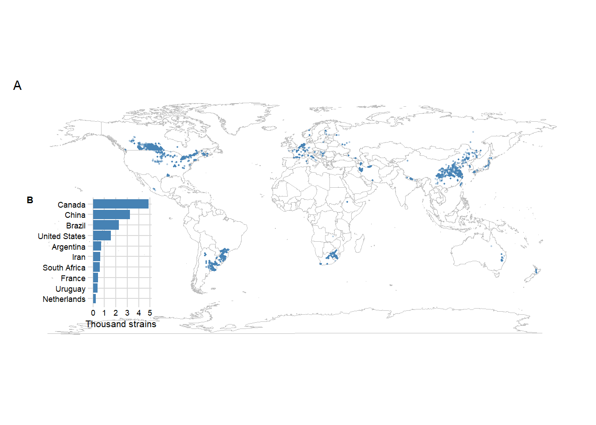
fgra1 <- ggplot(fgsc %>% filter(
FGSC == "F. graminearum" |
FGSC == "F. boothii" |
FGSC == "F. austroamericanum"))+
geom_sf(data = world1, fill = NA, size = 0.2, color = "gray")+
geom_point(aes(Longitude, Latitude, color = FGSC),
size = 0.2, alpha = 1,
shape = 1)+
theme_minimal()+
scale_color_colorblind()+
labs(x = "", y ="")+
theme(legend.position = c(0.15, 0.3),
legend.key.size = unit(1,"line"),
legend.background = element_rect(fill="gray98",
size=1, color = "gray98",
linetype="solid"))+
guides(color = guide_legend(override.aes = list(size=3, alpha =1)))+
ggsave("figs/map_Fgra1.png", dpi = 300, width = 9)## Saving 9 x 5 in image## Warning: Removed 177 rows containing missing values (geom_point).library(ggthemes)
fgra2 <- ggplot(fgsc %>% filter(FGSC == "F. asiaticum" |
FGSC =="F. meridionale" |
FGSC == "F. cortaderiae" ))+
geom_sf(data = world1, fill = NA, size = 0.2, color = "gray")+
geom_point(aes(Longitude, Latitude, color = FGSC), size = 0.2, alpha = 1,
shape = 1)+
theme_minimal()+
scale_color_few()+
labs(x = "", y ="")+
theme(legend.position = c(0.15, 0.3),
legend.key.size = unit(1,"line"),
legend.background = element_rect(fill="gray98",
size=1, color = "gray98",
linetype="solid"))+
guides(color = guide_legend(override.aes = list(size=3, alpha =1)))+
ggsave("figs/map_Fgra2.png", dpi = 300, width = 9)## Saving 9 x 5 in image## Warning: Removed 104 rows containing missing values (geom_point).(fgra1 / fgra2)+
ggsave("figs/map_Fgra.png", dpi = 300, width = 10)## Saving 10 x 5 in image## Warning: Removed 177 rows containing missing values (geom_point).## Warning: Removed 104 rows containing missing values (geom_point).## Warning: Removed 177 rows containing missing values (geom_point).## Warning: Removed 104 rows containing missing values (geom_point).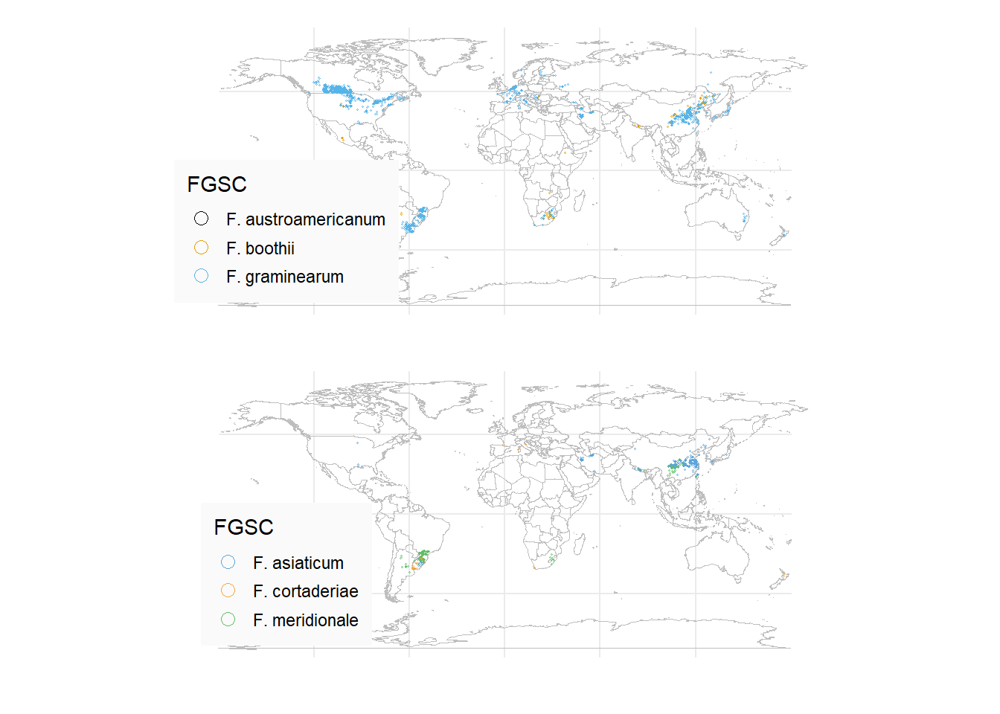
ggplot(fgsc %>% filter(TRI_genotype == "15-ADON" |
TRI_genotype =="3-ADON" |
TRI_genotype == "NIV" ))+
geom_sf(data = world1, fill = NA, size = 0.2, color = "gray")+
geom_point(aes(Longitude, Latitude, color = TRI_genotype), size = 0.2, alpha = 1,
shape = 1)+
theme_minimal()+
labs(x = "", y ="")+
scale_color_colorblind()+
theme(legend.position = c(0.15, 0.3),
legend.key.size = unit(1,"line"),
legend.background = element_rect(fill="gray98",
size=1, color = "gray98",
linetype="solid"))+
guides(color = guide_legend(override.aes = list(size=3, alpha =1)))+
ggsave("figs/map_tri.png", dpi = 300, width = 9)## Saving 9 x 5 in image## Warning: Removed 269 rows containing missing values (geom_point).## Warning: Removed 269 rows containing missing values (geom_point).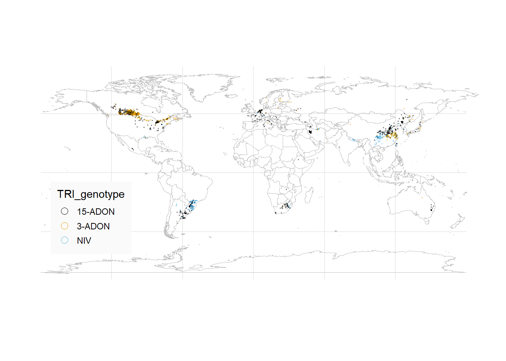
fgsc2 <- fgsc %>%
filter(TRI_genotype == "15-ADON" |
TRI_genotype == "3-ADON" |
TRI_genotype == "NIV") %>%
select(Host, TRI_genotype, FGSC2) %>%
filter(FGSC2 == "Fgra" |
FGSC2 == "Fmer" |
FGSC2 == "Fasi" |
FGSC2 == "Fcor" |
FGSC2 == "Fboo" |
FGSC2 == "Faus") %>%
filter(Host == "Wheat" |
Host == "Rice" |
Host == "Barley"|
Host == "Maize"
)library(FactoMineR)
attach(fgsc2)
data_mca = data.frame(Host, TRI_genotype, FGSC2)
head(data_mca)## Host TRI_genotype FGSC2
## 1 Wheat 15-ADON Fgra
## 2 Wheat 15-ADON Fgra
## 3 Wheat 15-ADON Fgra
## 4 Wheat 15-ADON Fgra
## 5 Wheat 15-ADON Fgra
## 6 Wheat 15-ADON Fgracats<- apply(data_mca, 2, function(x) nlevels(as.factor(x))) #enumera as categorias
cats## Host TRI_genotype FGSC2
## 4 3 6mca1 <- MCA(data_mca, graph = TRUE)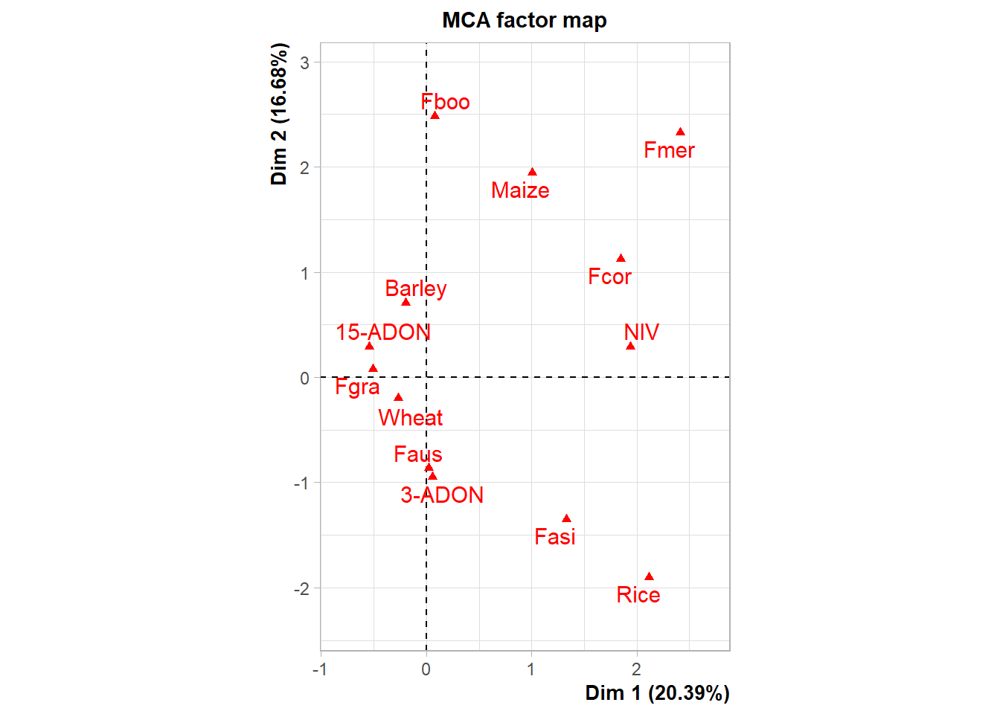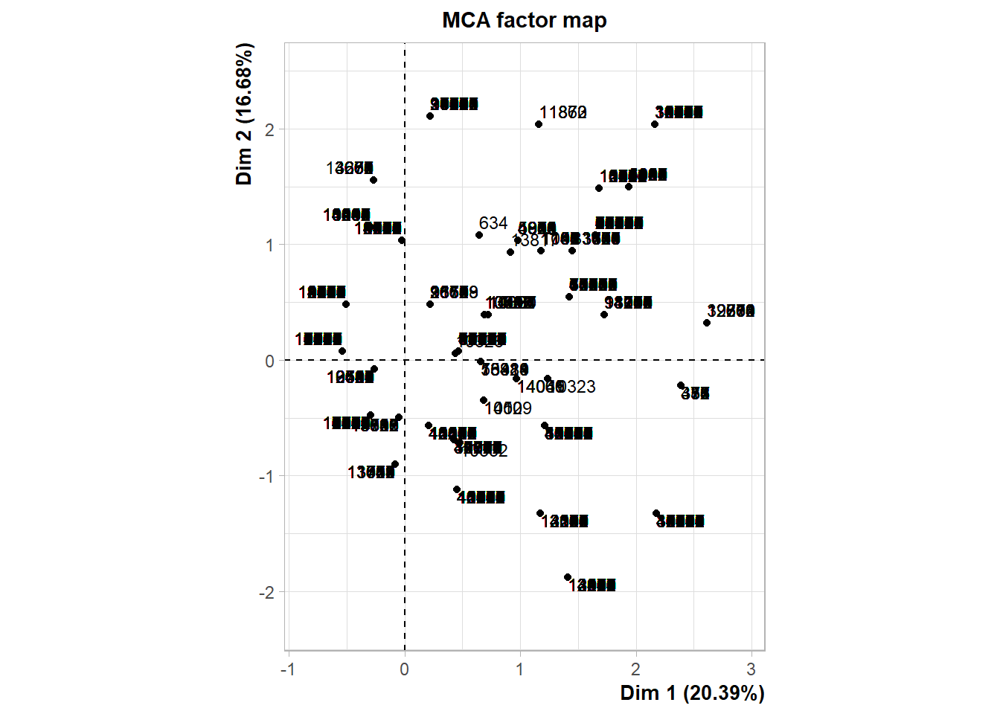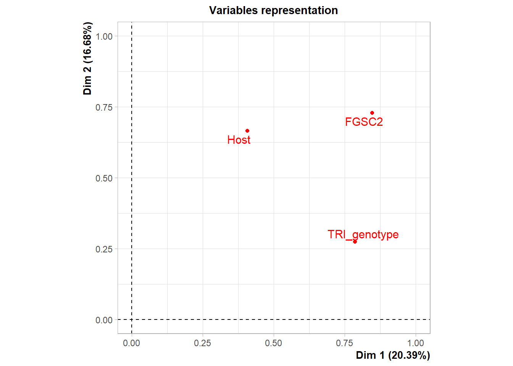
mca1## **Results of the Multiple Correspondence Analysis (MCA)**
## The analysis was performed on 14393 individuals, described by 3 variables
## *The results are available in the following objects:
##
## name description
## 1 "$eig" "eigenvalues"
## 2 "$var" "results for the variables"
## 3 "$var$coord" "coord. of the categories"
## 4 "$var$cos2" "cos2 for the categories"
## 5 "$var$contrib" "contributions of the categories"
## 6 "$var$v.test" "v-test for the categories"
## 7 "$ind" "results for the individuals"
## 8 "$ind$coord" "coord. for the individuals"
## 9 "$ind$cos2" "cos2 for the individuals"
## 10 "$ind$contrib" "contributions of the individuals"
## 11 "$call" "intermediate results"
## 12 "$call$marge.col" "weights of columns"
## 13 "$call$marge.li" "weights of rows"res.mca = MCA(data_mca, graph=FALSE)
plot(mca1)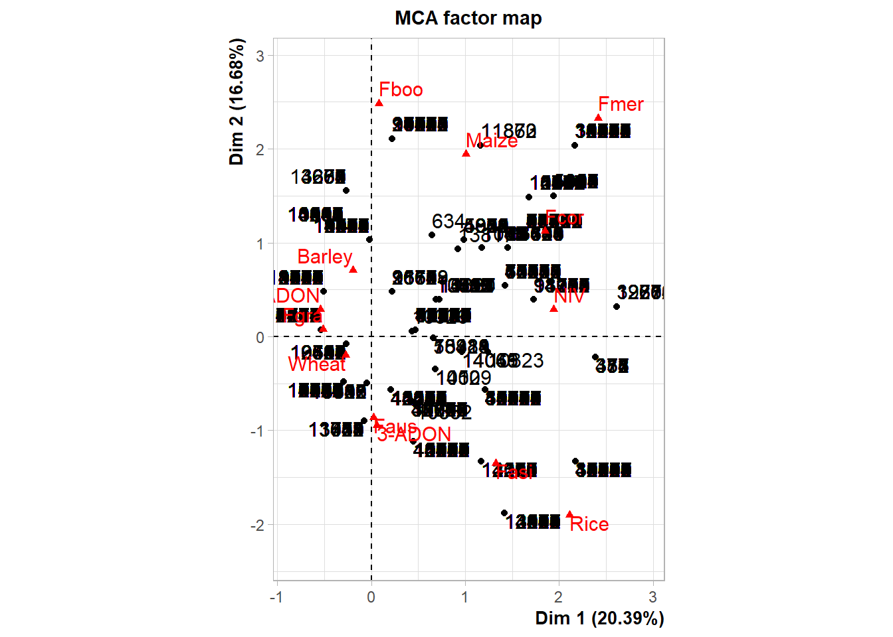
library("factoextra")## Welcome! Want to learn more? See two factoextra-related books at https://goo.gl/ve3WBaeig.val <- get_eigenvalue(res.mca)
head(eig.val)## eigenvalue variance.percent cumulative.variance.percent
## Dim.1 0.6796397 20.389191 20.38919
## Dim.2 0.5559623 16.678870 37.06806
## Dim.3 0.3716780 11.150339 48.21840
## Dim.4 0.3553292 10.659876 58.87828
## Dim.5 0.3341201 10.023604 68.90188
## Dim.6 0.3219566 9.658697 78.56058fviz_screeplot(res.mca, addlabels = TRUE)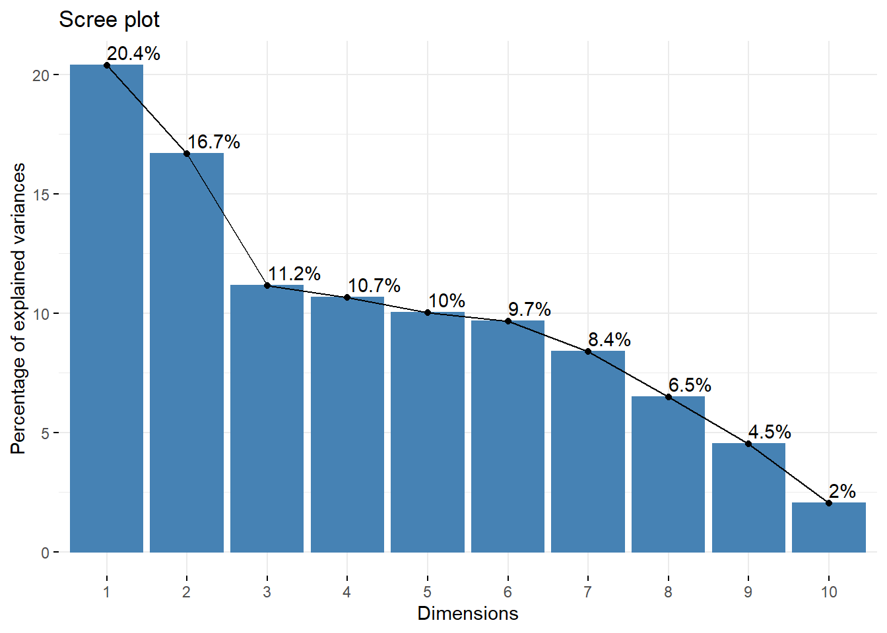
p <- fviz_mca_var(res.mca, label = "var", repel = T,
col.var = "contrib",
# Avoid text overlapping (slow if many point)
ggtheme = theme_minimal())
pca <- p + scale_color_viridis(end = 0.8)+
labs(title = "")+
xlim(-3, 3)+
ylim(-3,3)
ggsave("figs/pca.png", width =5, height = 5)p <- pca | (host /species)
p+
plot_layout(widths = c(1, 0.5))+
theme_minimal_grid(font_size = 8)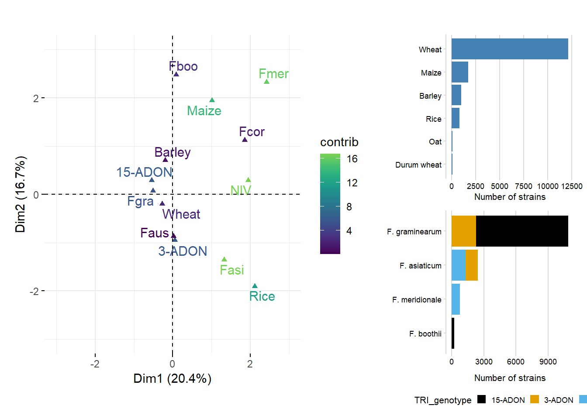
ggsave("figs/fig_combo.png", width = 8, height =4)